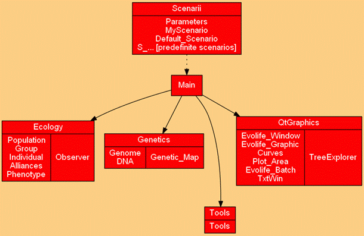

Evolife Jean-Louis
Dessalles
Telecom ParisTech
www.dessalles.fr
2. How to execute Evolife (+ download)
7. Create your
own Evolife scenario
8. Use Evolife’s
components separately (graphics, ecology, genetic algorithm)
The package
contains:
- Python
sources (*.py)
-
Configuration files (*.evo). These files simply
contain parameter-value pairs. The best way to edit them is to open them from
the configuration editor that you get by executing Starter.bat (or starter.sh). Each configuration file corresponds to a scenario.
- A few
scenarios (Scenarii/S_*.py) that implement specific problems.

|
Alliances.py |
Defines social links between individuals.
Useful for certain scenarios. |
|
Curves.py |
Stores points to be displayed on curves |
|
Default_Scenario.py |
Implements a default scenario from which
actual scenarios are derived. |
|
DNA.py |
Where the hereditary binary string is
defined, and crossover and mutation are implemented. |
|
Evolife_Batch.py |
A silent (no graphic) version of Evolife for batch mode |
|
Evolife_Graphic.py |
A few displays specific to Evolife |
|
Evolife_Main.py |
Evolife main
file. |
|
Evolife_Window.py |
Window system for Evolife. The
2012 version is based on QT (previous versions used Tk). |
|
Genetic_map.py |
Defines the location of genes on the DNA
string |
|
Genome.py |
Defines the genome of individuals as a set of
genes |
|
Group.py |
Defines groups, where reproduction and
interactions take place. |
|
Individual.py |
Defines the individual’s properties, which
bring together a genome, a phenome and social
relations |
|
MyScenario.py |
This file is used to instantiate
the scenario and make it accessible to all other modules. |
|
Observer.py |
Stores simulation results and performs
statistics. |
|
Parameters.py |
Interface with configuration file Evolife.evo |
|
Phenotype.py |
Defines a set of non-inheritable
characteristics called ‘phenes’ |
|
Plot_Area.py |
Defines a zone to display graphics. Can be
used independently from Evolife |
|
Population.py |
Defines the whole population as a set of
groups |
|
S_*.py |
Specific scenarios. |
|
Simulation_Thread.py |
Interface with Evolife’s window system |
|
Tools.py |
A few useful functions |
|
TxtWin.py |
Defines a zone to display texts. Can be used
independently from Evolife |
|
Void_Scenario.py |
A scenario that can be
customized. Its execution launches Evolife’s window system
directly, thus bypassing Evolife_Main.py. |
|
labyr.gif |
Image of the labyrinth (used in one basic
scenario) |
|
*.csv |
Files created by Evolife. They
contain evolution curve coordinates (as they are displayed). These files can
be opened with MS-Excel |
|
*.res |
Files created by Evolife. They
contain coordinates for each curve, averaged over time. Such files may be
concatenated to average over several experiments (useful in batch mode). |
|
EvoStart.gen |
This file contains (in text format) the
genome of an entire population to start from (if that option is chosen). |
|
Readme.html |
Evolife documentation. |
|
Readme.txt |
A text version of this file |
|
Evolife.html |
Homepage for the Evolife package. |
|
Ants.py |
Foraging ant colony |
|
CellularAutomaton.py |
Illustrates one-dimensional cellular automata |
|
Cocktail.py |
Illustrates the ‘cocktail party’ effect |
|
Segregationism.py |
Illustrates Thomas Schelling’s famous experiment |
|
Swallows.py |
Illustrates collective decition |
2. How to execute Evolife (+ download)
7. Create your
own Evolife scenario
8. Use Evolife’s
components separately (graphics, ecology, genetic algorithm)
Evolife
Jean-Louis Dessalles
Telecom ParisTech
www.dessalles.fr